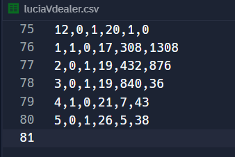

Meeting the Brief
Basic Requirements
1) User Interaction :
Randomness included :
A random word card is chosen from the deck
2) Three Different Inputs :
Here the user can input 3 different inputs such as the value of an ace, hitting or standing and choosing a game mode of course!
3). Game modes:
Includes all gamemodes specified in brief

Advanced Requirements
1) Data recording abilities:
CSV file for each game mode is created such as luciaVsdealer, PvP, ect.

2) Statisitics:
Mode, mean, frequency and standard deviation are all calculated a displayed in the table shown below and presented visually in a graphical format too.

3) Hypothesis Testing :
Here, parameters were altered and new graphs were produced to accommodate the new data.

« Previous